화면에서 발견한 문제를
끝까지 따라갑니다
좌표는 ref에 기록하고, 화면에 필요한 값만 React state로 관리했습니다.
화면에서 멈추지 않고 bfcache와 서버 캐시까지 원인을 좁혔습니다.
아이의 손 움직임으로 플레이하는 놀이 4종과, 놀이 · 대화 기록을 부모가 하루 단위로 확인할 수 있는 서비스를 만들었습니다. 프론트엔드를 맡았고, 팀원 이탈 이후에는 놀이 2종을 처음부터 끝까지 단독으로 구현했습니다.
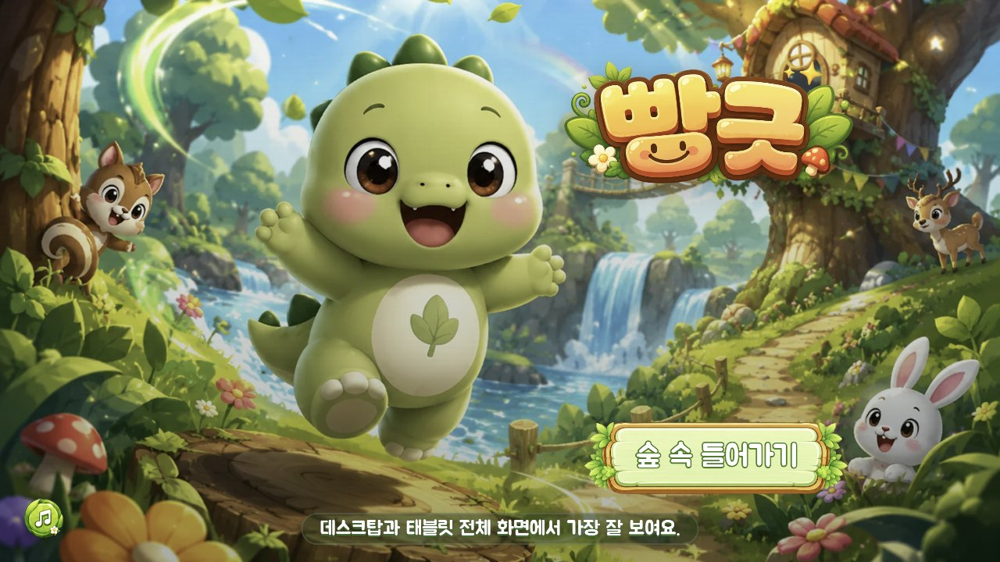
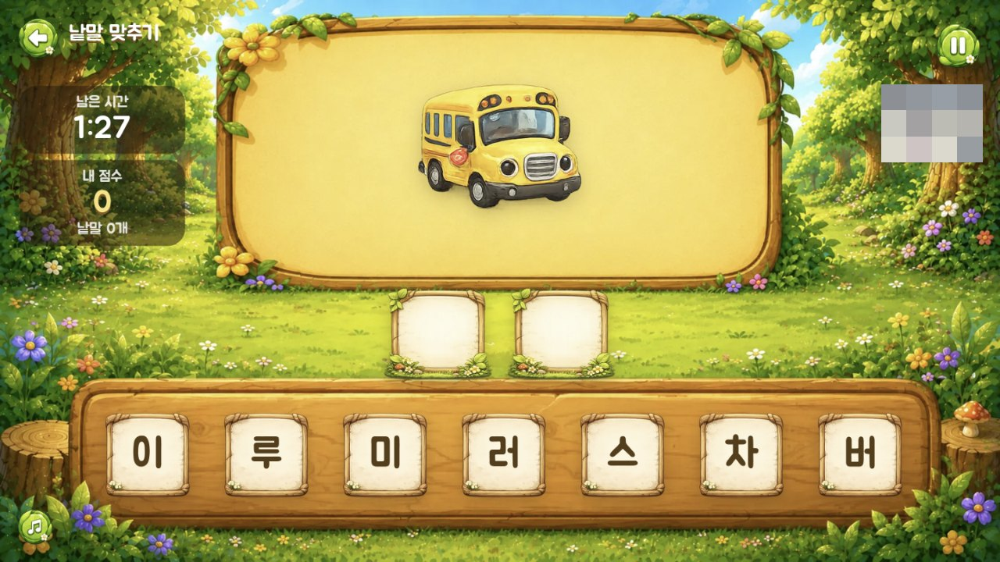
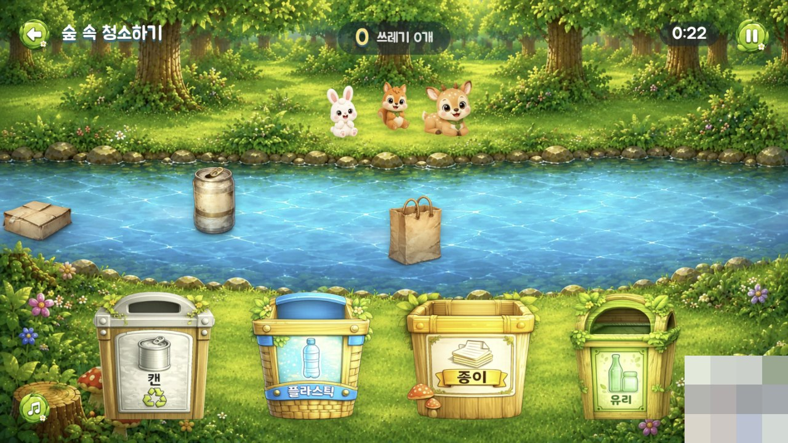
낱말 맞추기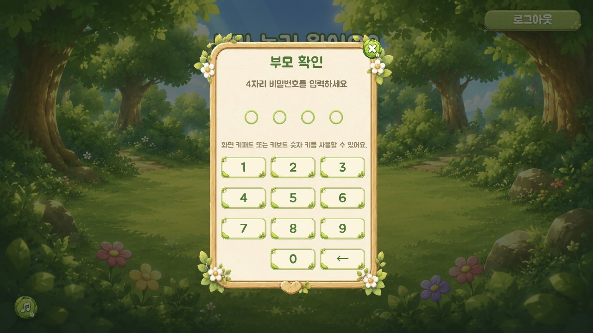
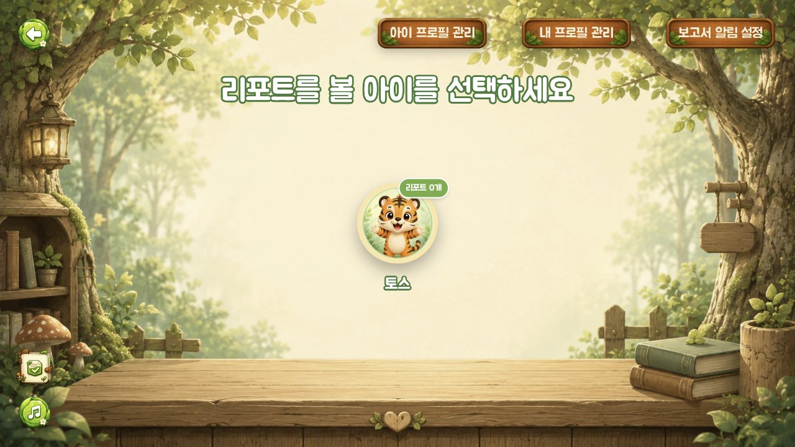
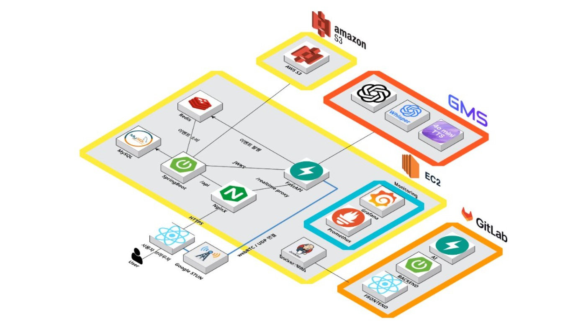
손 좌표처럼 자주 바뀌는 값까지 state에 올리면 불필요한 리렌더가 늘어납니다.
아래에서 ref와 state 방식을 직접 비교할 수 있습니다.
튜토리얼과 본 게임은 같은 판정 로직을 사용해, 연습한 조작이 실제 플레이에서도 그대로 이어지게 했습니다.
손은 인식됐지만 손바닥 중심만으로는 과일이 잘리지 않는 경우가 많았습니다.
같은 조건에서 과일 10개를 반복 플레이하며 판정 범위를 단계적으로 넓혔습니다.
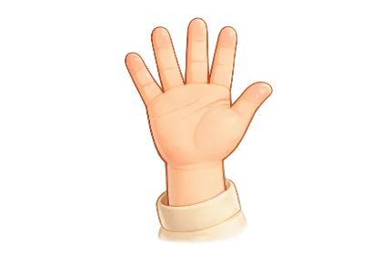
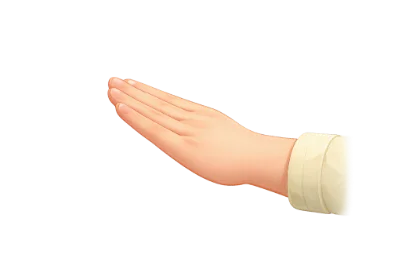
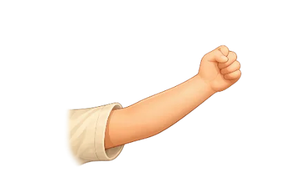
에셋과 손 판정이 절대 좌표를 사용해 일반적인 breakpoint 방식으로는 위치를 맞추기 어려웠습니다.
하나의 1280 × 720 좌표계를 유지하고 화면 전체를 비율에 맞춰 축소했습니다.
좌표계 전체가 항상 보입니다.
테두리 밖은 화면에 없습니다. 모서리 점이 사라지면 버튼이 잘린 것입니다.
그 결과 데스크탑과 태블릿에서 같은 구도가 유지됩니다. 이 포트폴리오 역시 같은 원칙으로 만들었습니다.
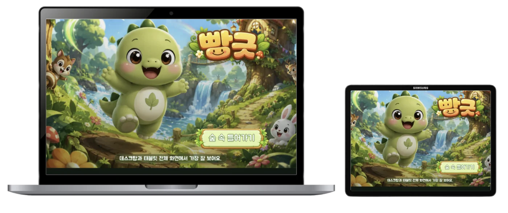
PNG 버튼의 투명 여백까지 클릭 영역에 포함돼, 버튼 사이 빈 공간에서도 클릭이 발생했습니다.
아래에서 clip-path 적용 전후를 직접 비교할 수 있습니다.
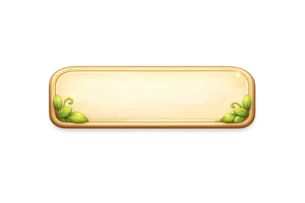
이어하기2인 팀에서 Django · DRF API와 프론트 연동을 담당했습니다. UI/UX는 팀장이 맡았고,
브라우저와 서버 캐시 사이에서 생기는 문제를 주로 해결했습니다.
원인은 bfcache였습니다. 뒤로가기 시 브라우저가 페이지를 메모리에서 그대로 복원해 서버의 최신 값과 화면이 달라졌습니다. pageshow.persisted로 복원을 감지하고, 전체 새로고침 대신 필요한 블록만 다시 요청했습니다.
삭제된 게시물이 인기글 캐시에 남아 404가 발생하기도 했습니다. 작성 · 삭제 · 좋아요 시 랭킹 캐시를 무효화하고, 추천 캐시는 좋아요 · 저장 수를 캐시 키에 포함해 해당 값이 바뀌면 새 추천이 계산되도록 했습니다.